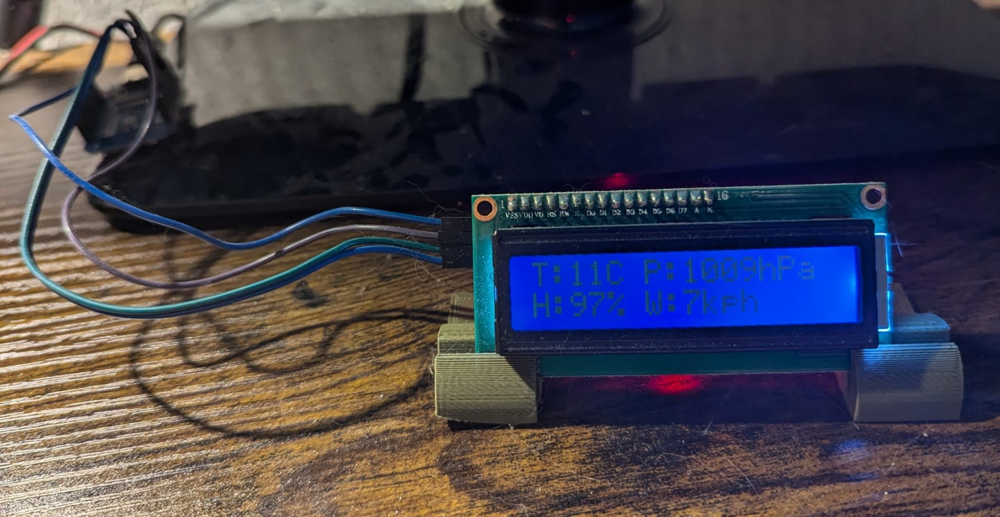

Displays

This is a simple project built around an Arduino Nano, a DS3231 RTC module, and an I2C LCD display. It shows the current time, date, and temperature — all on a small LCD screen. The DS3231 is a real-time clock module with a built-in temperature sensor, which means you get very accurate timekeeping and temperature readings from a single module. The DS3231 is also powered by a small coin cell battery, so it keeps time even when the power is off and doesn't lose track of the time — the time gets set directly from the computer when uploading the code. Both the RTC and the LCD communicate over I2C, so they share just two wires (SDA and SCL) while each having their own unique I2C address — keeping the wiring clean and simple. The Arduino Nano runs the code: it polls the DS3231 for the current time, date, and temperature, then formats and sends that data to the LCD to be displayed.

This project uses an ESP8266 and an I2C LCD to display live weather data fetched from the internet. The ESP8266 connects to Wi-Fi and pulls data from the OpenWeatherMap API from my location every 10 minutes. The data is parsed and formatted by the ESP8266, then pushed to the LCD showing temperature, humidity, atmospheric pressure, and wind speed. This lets me have a real-time weather display right on my desk, without needing to check my phone or computer.